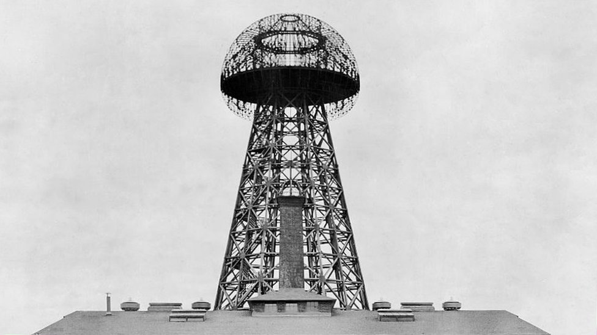

Inventos
Corriente Alterna (CA): Tesla promovió el uso de la corriente alterna para la transmisión de electricidad, lo que permitió la distribución eficiente de energía a largas distancias.
Transformador Tesla: Un dispositivo que puede aumentar o disminuir voltajes eléctricos, fundamental para la transmisión de corriente alterna.
Bobina de Tesla: Un transformador resonante que genera altas tensiones y frecuencias, utilizado en experimentos de electricidad y en aplicaciones como radio.
Motor de Inducción: Utiliza corriente alterna para funcionar y es la base de muchos motores eléctricos modernos.
Sistema de transmisión inalámbrica: Tesla experimentó con la transmisión de energía eléctrica sin cables, buscando desarrollar tecnología para la comunicación y la energía a distancia.
Radio: Aunque la invención de la radio se atribuye a otros, Tesla realizó importantes contribuciones a su desarrollo, incluyendo la transmisión de señales.
Control remoto: Demostró un barco controlado de forma remota, sentando las bases para la tecnología moderna de control remoto.
Lámpara fluorescente: Tesla exploró tecnologías de iluminación, incluyendo la lámpara fluorescente, que se basa en la excitación de gases.
Turbina de Tesla: Un diseño de turbina sin palas que utiliza discos para convertir la energía del fluido en movimiento rotativo, aunque no tuvo un gran impacto comercial.
Energía Geotérmica y Solar: Tesla también propuso la posibilidad de utilizar fuentes de energía renovables, como la energía geotérmica y solar.